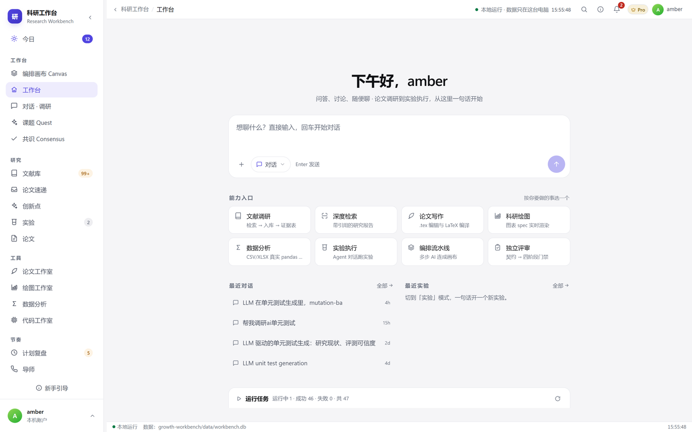
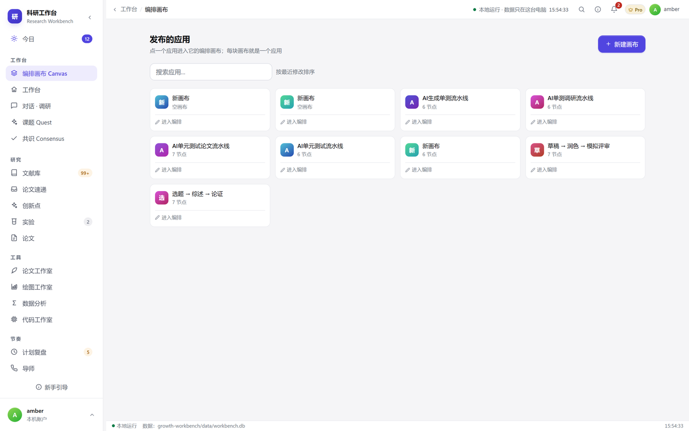
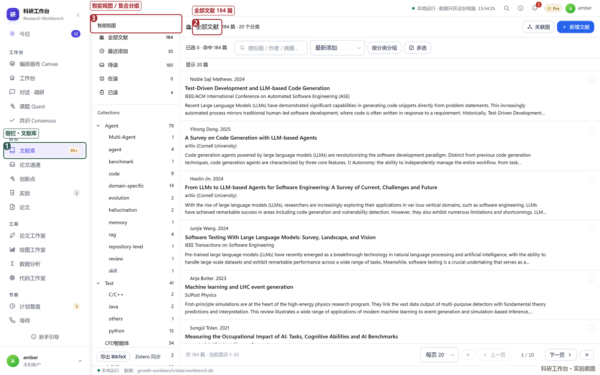
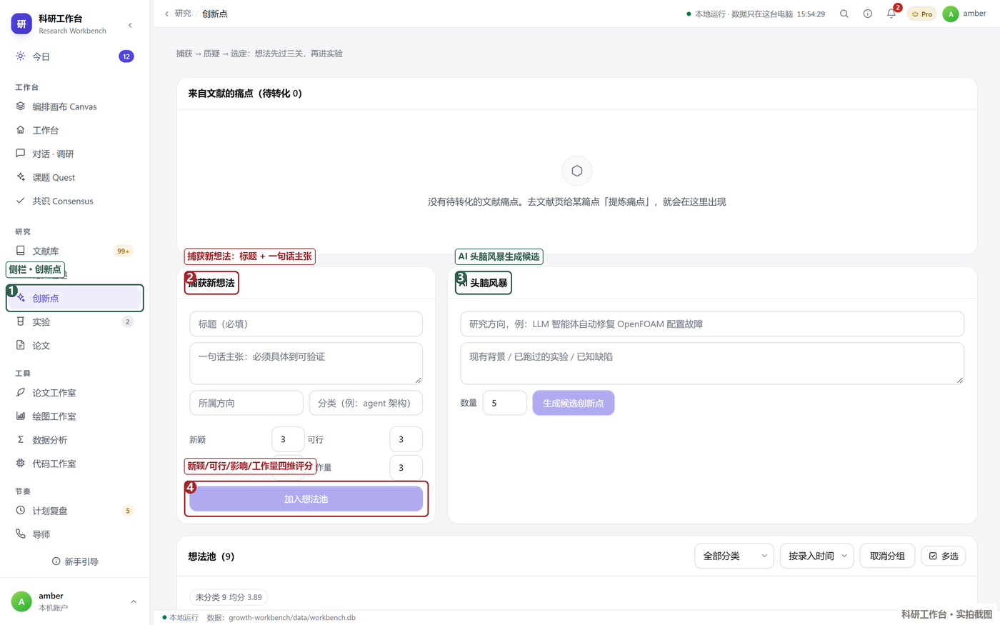
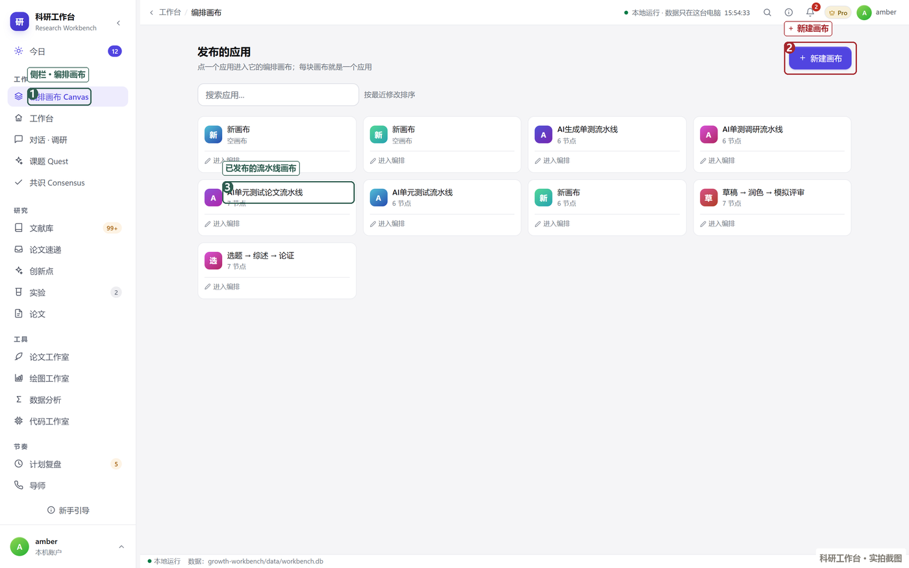
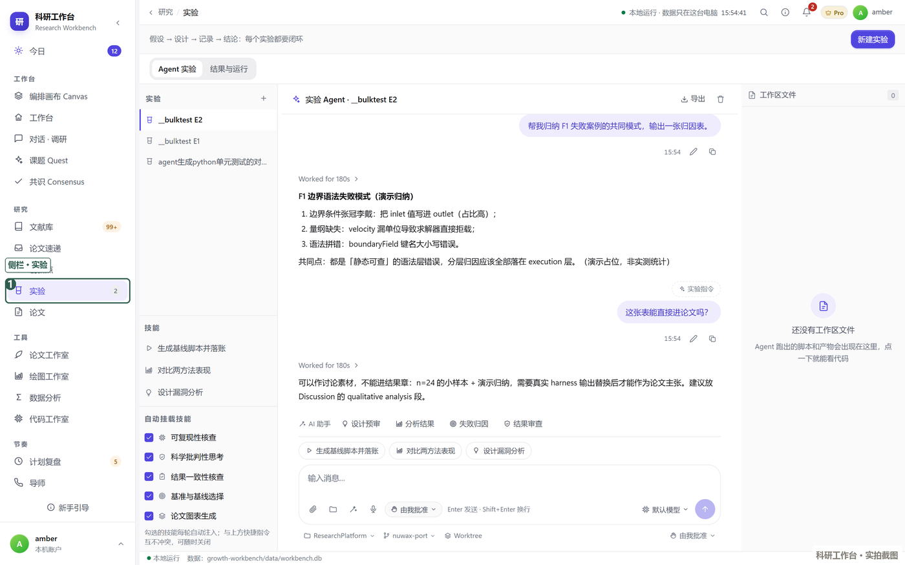
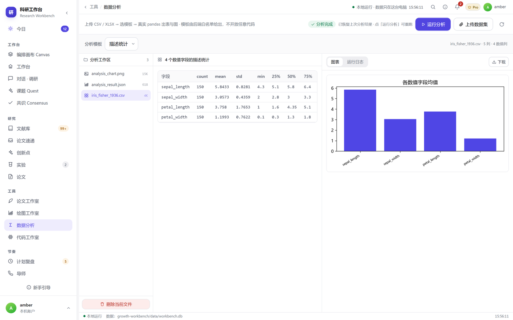
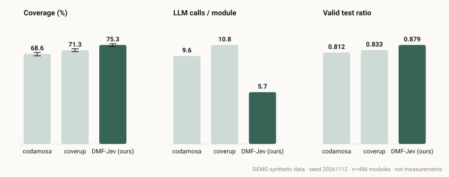
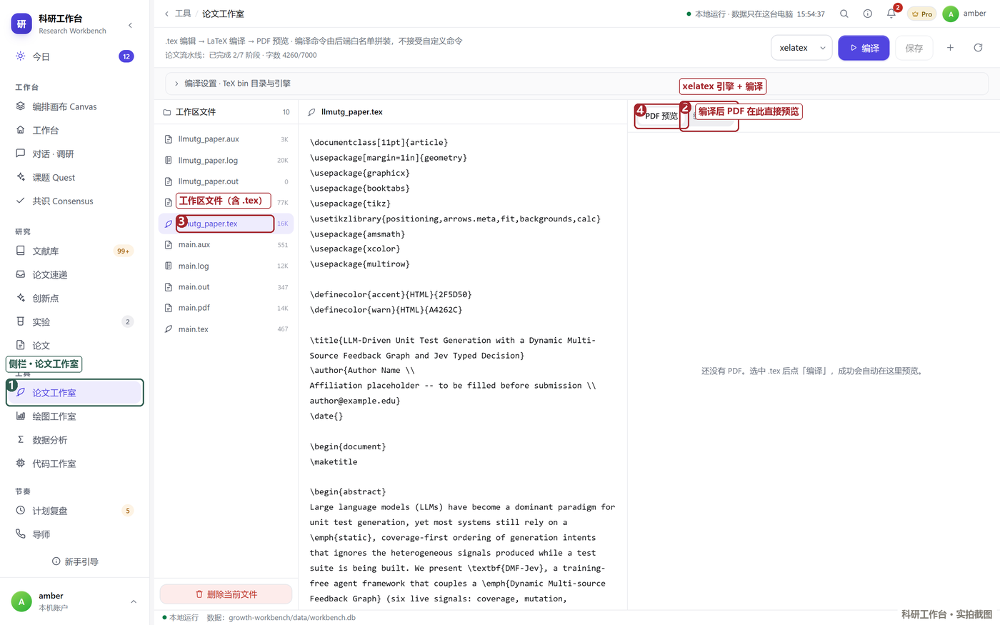
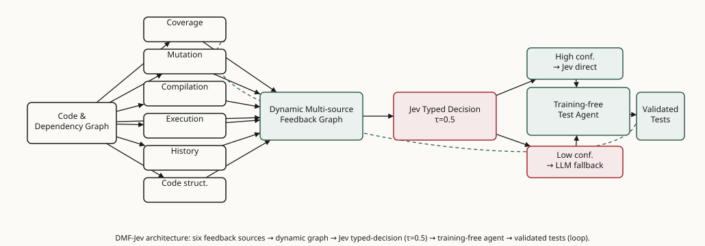

一份「边做边学」的研发案例：教你在研流里，把一条真实研究线（LLM 驱动单元测试生成）走完
调研 → 选题 → 创新 → 实验 → 数据后处理 → 写作，并直接用工作台的 LaTeX 编译出英文论文 PDF。
本案例已用一份合成的演示实验数据完整跑通——打开就能看到真实的表格、带 95% CI 的图和编译好的 PDF。
跟着本教程走完，你将获得一份可直接编译的英文论文，以及在工作台里真实落地的研究资产。

DEMO。换成你自己的实测数据重跑同一套命令，就是真论文。
整条流水线对应论文的章节结构。每一阶段都是工作台里可操作、可核对的一步。


目标：把「LLM 单元测试生成」领域的文献收进工作台的文献库，并标注与本研究的关联——这就是论文第 2 章 Related Work 的素材。
左侧导航 文献 Literature（/literature）；批量检索可用 litsearch / OpenAlex / Zotero；论文喂送用 paperfeed。
对应 API：POST /api/literature、GET /api/literature。
# 带 notes 标注关联，再入库 curl -b "wb_session=$TOK" -X POST http://127.0.0.1:8000/api/literature \ -H 'Content-Type: application/json' \ -d '{ "title":"TestPilot: An LLM-Based Developer Tool for Authoring Tests", "authors":"Schäfer, M. et al.","year":2023,"venue":"arXiv:2308.16521", "url":"https://arxiv.org/abs/2308.16521","status":"read","rating":5, "relevance":"high","tags":"test-generation,llm", "notes":"生成-修复闭环范式；本研究 agent 接口参考它。" }'
已有条目若是占位，可直接 PATCH /api/literature/{id} 填实。
调研要点：先建「检索—筛选—矩阵」（/api/literature/matrix），再提炼「主张 vs 已有工作」的差距表。REFLEX 是方法内核出处；CodaMosa/TestEval/CoverUp 是基线与基准。

目标：从已调研的文献缺口里，定位一个值得做、且能被实验检验的研究问题——而不是泛泛地「提升覆盖率」。
工作台的文献矩阵暴露出一个被反复研究的维度（覆盖率提升）和一个被忽略的瓶颈：在覆盖率见顶后，下一步该生成什么测试仍靠启发式排序（order_intentions / top_k）。
本教程据此把选题收口为：用「动态多源反馈 + 类型化决策」替代静态覆盖排序。
这一步的产出不直接入库为单独资产，而是沉淀为下一阶段「创新点」的种子。

目标：把选题落成三条可证伪主张（A/B/C），而非空泛的「我们提出了一个框架」。这正是 CCF-A / TOSEM 审稿看重的 claim 可检验性。
创新点 Ideas（/api/ideas）：每条带 novelty / feasibility / impact / effort（1–5 分）与 one_liner、notes。
order_intentions/top_k。否证条件：覆盖增益 < 2pp 且 LLM 调用不降反升。每条都绑定一个可被实验推翻的判据，方法实现见阶段 4，架构图见阶段 6 的画布 25。

目标：把三条主张变成可复现的实验：明确的基准、基线、指标定义。

目标：把原始日志变成可放进论文的图表与统计结论，并显式声明真实/模拟边界。


目标：把前五阶段资产组装成英文论文，并在工作台里编译出 PDF。
论文章节（/api/paper/sections、/api/paper/stages）做大纲与进度；
LaTeX 编译工作室 /api/workspace/tex/compile 把 .tex 写进工作区 → 编译 → 取回 PDF。
# 1) 上传 .tex 到工作区 curl -b "wb_session=$TOK" -X PUT http://127.0.0.1:8000/api/workspace/file \ -H 'Content-Type: application/json' \ -d '{ "kind":"tex","owner":"default","name":"llmutg_paper.tex","content":"<整篇 LaTeX 源码>" }' # 2) 编译（xelatex，连跑两次解析交叉引用） curl -b "wb_session=$TOK" -X POST http://127.0.0.1:8000/api/workspace/tex/compile \ -H 'Content-Type: application/json' -d '{ "name":"llmutg_paper.tex","engine":"xelatex" }' # 3) 取回 PDF curl -b "wb_session=$TOK" "http://127.0.0.1:8000/api/workspace/artifact?kind=tex&name=llmutg_paper.pdf&owner=default" -o llmutg_paper.pdf
论文结构：1. Introduction · 2. Related Work · 3. Motivation & RQ · 4. Method (DMF-Jev) · 5. Experimental Design · 6. Data Post-processing · 7. Results · 8. Discussion · 9. Threats · 10. Conclusion。
下图为方法内核（论文 §4 图 1），同图也以画布形式存于工作台 /api/canvas/25（13 节点 / 20 边，含反馈闭环）。

下面六张都是本机运行时的真实界面截图，不是示意图；点开可看大图。
它们与新手引导里 28 个功能点的示例卡图片来自同一套素材库 /tutorial/ui/。
以下是本教程真实产出的可下载文件（相对本页同目录）：
results_demo.csv 同款列替换 → 重跑统计与注入 → 工作台编译；[Author Name] / 单位 / 邮箱换成真实署名；telpa / Undermind 的引用出处，补 CRediT / 基金 / 数据可用性。